Matriochka
Chaque bloc peut contenir un monde.
Un mod Fabric pour Minecraft 26.3. Dix mondes, chacun scellé dans un seul bloc et emboîté dans le précédent. Chaque monde a sa règle, ses créatures, sa station, et un boss qui garde le noyau ouvrant le suivant.
- Minecraft 26.3
- Fabric
- Version 0.1.0
- Solo et multijoueur
Comment s'ouvre un monde
Une seule boucle, dix fois de suite. Chaque tour te demande d'oublier le monde d'avant.

Réveille le Gardien
Suis le croquis du Parchemin jusqu'au Sanctuaire du Gardien et bats le Gardien du bloc. Il laisse son noyau, l'Établi matriciel et ta première Terre de monde.

Fabrique une Graine
À l'Établi matriciel : le noyau du dernier boss et des ressources de son monde. La Graine du monde 1 demande le Noyau du Gardien, 16 lingots de fer et 16 bûches de chêne.
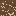
Plante-la sur une Terre de monde
Bêche une Terre de monde à la houe et plantes-y la Graine. Chaque Graine veut la terre du monde précédent, et une condition : eau, chaleur, redstone, ciel ouvert, obscurité, hauteur.
Entre dans le bloc
La Graine éclot en Bloc-monde. Utilise-le et tu rétrécis à l'intérieur, sur un Seuil qui te ramène dehors.

Survis à sa règle
Toxine, chaleur, vent, bruit, gravité, pression : chaque monde change ta façon de jouer. Sa station transforme les ressources locales en équipement qui répond à la règle.

Bats le boss, prends son noyau
Chaque attaque est annoncée, puis laisse une ouverture. Lis le schéma, punis l'ouverture, prends le noyau.

Descends encore
Le noyau est l'ingrédient clé de la Graine suivante. Dix fois, jusqu'à ce que le dernier bloc s'ouvre sur quelque chose de bien plus grand.
Dix mondes, dix règles
Apprentissage, puis maîtrise, puis expertise. Le monde 10 vérifie tout à la fois.
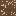
1Jungle toxiqueToxineL'air t'empoisonne. L'eau te lave.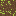
2Filons géantsChaleurLa lave et la profondeur te cuisent lentement.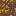
3Donjon sans finVerrousPas de ciel, que des salles. Et elles bougent.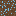
4Archipel des tempêtesVentLes rafales te jettent hors des îles.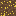
5Profondeur sans lumièreBruitLe noir complet. Chaque pas fait du bruit.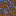
6Royaume inverséGravitéToutes les 90 secondes, le haut devient le bas.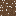
7Océan sous pressionOxygèneL'oxygène s'épuise. La pression écrase.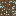
8Saisons accéléréesSaisonUne journée dure huit minutes. Une saison, deux.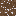
9Terre agitéeSecousseLe sol se soulève toutes les minutes.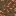
10L'Atelier géantSynthèseToutes les anciennes règles, dans un atelier de géants.
Pensé pour qu'on y survive
La mort apprend. Elle n'efface pas des heures de progression.
Poupée de vie
Une poupée gigogne que tu portes. Quand tu meurs, une couche se brise à ta place et tu te relèves. Elle gagne des couches après les mondes 1, 5 et 8.
Âmes et karma
Chaque objet porte une âme. À l'Autel des âmes, purifie-la pour le karma ou dévore-la pour la puissance. Le karma change les prix, les quêtes et la fin.
Classes d'équipement
Chaque arme, outil ou pièce d'armure naît avec l'une des six classes. Monte-la au niveau 5 avec des âmes, ou tente ta chance avec une Poupée du hasard.
Joue en groupe
Jusqu'à huit joueurs partagent un groupe, ses mondes et ses boss vaincus. Les boss se renforcent à chaque joueur qui rejoint le combat.
Dans les blocs
Captures du mod en jeu, sous Minecraft 26.3.


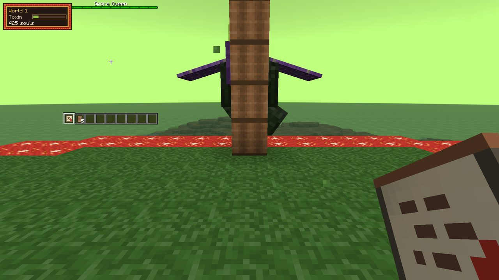
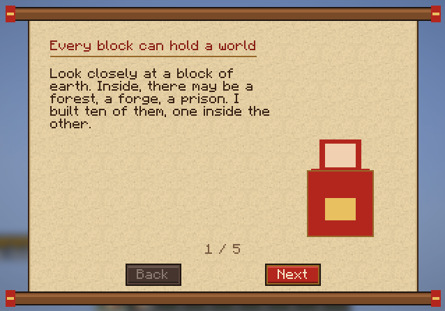
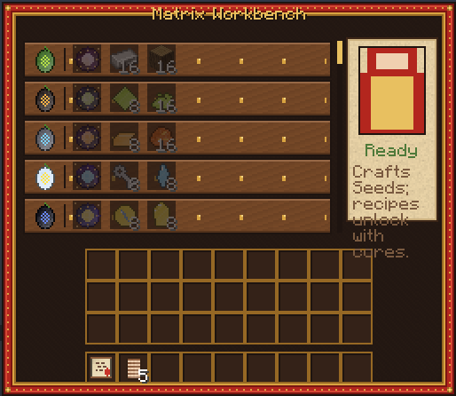
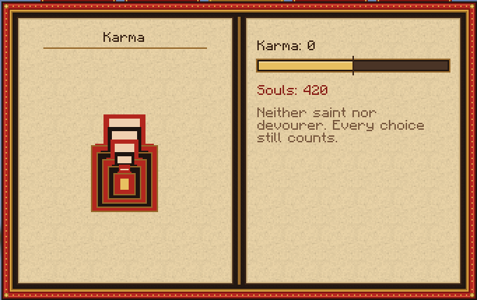
Prêt à rétrécir ?
Minecraft 26.3, Fabric Loader 0.20 ou plus récent, Fabric API, GeckoLib 5.5.7 et Java 25.